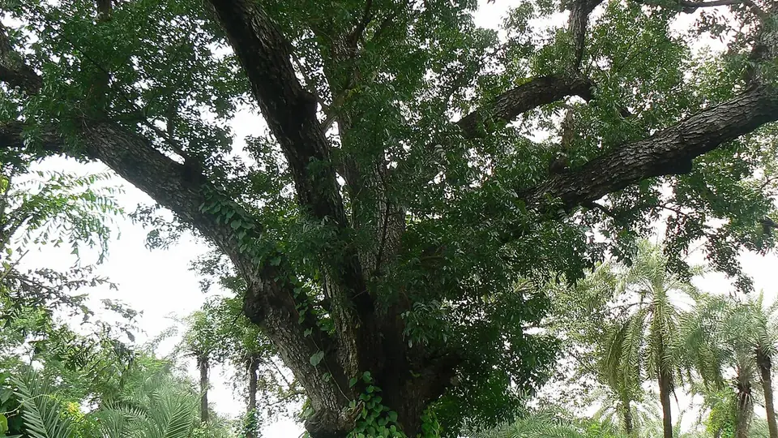

महोगनी की खेती
Mahogany Farming — Claims vs Reality in India
महोगनी लगाने से पहले एक बात जान लीजिए: भारत में इसकी कोई संगठित मंडी नहीं है। पॉपलर की प्लाईवुड मिल और सागौन का वन-निगम डिपो जैसा बना-बनाया रास्ता यहाँ नहीं मिलेगा।
✍️ Kunal Rajput — KrashiMitra⏱️ 11 मिनट पढ़ें📅 अगस्त 2026

पूरी तरह बढ़ा हुआ महोगनी का पेड़ — फर्नीचर लायक मोटी लकड़ी के लिए 12–15 साल या उससे ज़्यादा लगते हैं।
पेड़ में बुराई नहीं — दावों में है
🏪
संगठित मंडी नहीं
सबसे बड़ा जोखिम
❄️
पाला
छोटे पौधे मार देता है
📏
160–440
पेड़ प्रति एकड़
📖
भूमिका
पिछले कुछ सालों में महोगनी (Mahogany) भारत में सबसे ज़्यादा बेचा जाने वाला "कमाई वाला पेड़" बन गया है। सोशल मीडिया, यूट्यूब और गाँव-गाँव घूमने वाले पौध विक्रेता एक ही तरह का दावा दोहराते हैं — "12 साल में एक पेड़ से लाखों", "एक एकड़ से करोड़ों", और अक्सर साथ में "बायबैक गारंटी"।
यह लेख महोगनी लगाने से मना नहीं करता। पर यह वह जानकारी देता है जो पौधा बेचने वाला नहीं देता: महोगनी भारत की मूल प्रजाति नहीं है, इसे नम और गर्म जलवायु चाहिए (इसीलिए सूखे उत्तर भारत में इसे बेचना ही सबसे बड़ी गड़बड़ है), और सबसे अहम — सागौन या पॉपलर जैसी इसकी कोई बनी-बनाई, संगठित मंडी भारत में अभी नहीं है। जहाँ पॉपलर के लिए प्लाईवुड मिल और यूकेलिप्टस के लिए कागज़ मिल पहले से खड़ी हैं, वहाँ महोगनी बेचने के लिए आपको खुद खरीदार ढूँढना होगा। इस लेख में यही पूरा सच, और अगर फिर भी लगाना है तो सही तरीका।
विज्ञापन
🔍
बड़े दावों की जाँच — तीन सवाल जो हर विक्रेता से पूछिए
जब कोई आपको महोगनी की पौध बेचने आए, तो बहस मत कीजिए — बस ये तीन सवाल पूछिए। ईमानदार विक्रेता के पास तीनों के जवाब होंगे; बाकी बात बदल देंगे।
सवाल
✅ अच्छा जवाब कैसा होगा
❌ खतरे का संकेत
"आपके लगाए हुए 10 साल पुराने पेड़ कहाँ हैं? मैं देखने चलूँगा।"
नाम, गाँव और किसान का फोन नंबर देकर ले चलें
सिर्फ फोटो, वीडियो या "दूसरे राज्य में हैं"
"मेरी लकड़ी कौन खरीदेगा? उस खरीदार का नाम और नंबर दीजिए।"
असली आरा मशीन / फर्नीचर कारखाने का नाम-पता
"कंपनी खुद खरीद लेगी", "मंडी में बहुत डिमांड है"
"बायबैक का करार लिखित में, कंपनी की मुहर के साथ दीजिए।"
साफ शर्तें, भाव तय करने का तरीका, कंपनी का पुराना रिकॉर्ड
सिर्फ मौखिक वादा, या ऐसा कागज़ जिसमें भाव लिखा ही न हो
⚠️
"बायबैक गारंटी" का कागज़ तभी काम का है जब वह कंपनी 12–15 साल बाद भी मौजूद हो। पौध बेचने वाली कई कंपनियाँ इतने साल चलती ही नहीं। इसीलिए फैसला इस आधार पर कीजिए कि आपके अपने ज़िले में लकड़ी का असली खरीदार है या नहीं — किसी गारंटी के कागज़ पर नहीं।
🌍
महोगनी कहाँ चलती है, कहाँ नहीं
महोगनी मूल रूप से मध्य व दक्षिण अमेरिका की नम, गर्म जलवायु का पेड़ है। भारत में यह वहीं अच्छा करता है जहाँ हवा में नमी रहती है और सर्दी बहुत तेज़ नहीं पड़ती।
बात
✅ महोगनी के लिए अच्छा
❌ यहाँ उम्मीद मत रखिए
जलवायु
गर्म और नम — केरल, तटीय कर्नाटक, तमिलनाडु, पश्चिम बंगाल, ओडिशा, पूर्वोत्तर, बिहार-यूपी के नम इलाके
सूखा और गर्म — राजस्थान, हरियाणा, पश्चिमी यूपी के शुष्क क्षेत्र
पाला
पाला न पड़ता हो या बहुत हल्का
जहाँ हर साल तेज़ पाला पड़ता है — छोटे पौधे मर जाते हैं
मिट्टी
गहरी, भुरभुरी, अच्छी निकासी वाली दोमट
जलभराव वाली, ऊसर या बहुत उथली पथरीली
बारिश
अच्छी बारिश या पक्की सिंचाई
कम बारिश और सिंचाई की सुविधा भी नहीं
हवा
आड़ वाली जगह
बहुत तेज़ खुली हवा — शाखाएँ टूटती हैं
💡
सीधी बात: अगर आपके इलाके में हर साल तेज़ पाला पड़ता है या गर्मी में हवा बहुत सूखी रहती है, तो महोगनी आपके लिए नहीं है — चाहे विक्रेता कुछ भी कहे। ऐसे इलाकों में सागौन, यूकेलिप्टस, पॉपलर या बांस कहीं ज़्यादा भरोसेमंद विकल्प हैं।
🌱
अगर लगाना ही है — तो सही तरीका
मान लीजिए आपकी जलवायु नम है, आपने खरीदार भी देख लिया है, और आप जोखिम समझकर आगे बढ़ना चाहते हैं। तब यह तरीका अपनाइए।
प्रजाति: भारत में मुख्यतः Swietenia macrophylla (बड़ी पत्ती वाली) और Swietenia mahagoni लगाई जाती हैं। खरीदते समय वैज्ञानिक नाम पूछिए और बिल पर लिखवाइए।
पौध: स्वस्थ, सीधी, कम से कम एक फुट ऊँची पॉलीबैग वाली पौध। सस्ती दर पर बड़ी संख्या में बिकने वाले कमज़ोर पौधों से बचें।
रोपाई: मानसून की शुरुआत में (जून–अगस्त)।
गड्ढा: लगभग 45×45×45 सेंटीमीटर, ऊपर की मिट्टी में सड़ी गोबर की खाद मिलाकर भरें।
दूरी: आम तौर पर 3×3 मीटर (लगभग 440/एकड़) से 5×5 मीटर (लगभग 160/एकड़)। ज़्यादा दूरी पर तना मोटा बनता है, जो फर्नीचर की लकड़ी के लिए ज़रूरी है।
सिंचाई: पहले 2–3 साल नियमित; सूखी गर्मी में यह पेड़ जल्दी तनाव में आता है।
छँटाई: हर साल नीचे की डालें काटकर सीधा, गाँठ-रहित तना बनाइए। महोगनी में शाखाएँ जल्दी फैलती हैं, इसलिए छँटाई और भी ज़रूरी है।
पाले से बचाव: पहले दो जाड़ों में छोटे पौधों को पुआल या बोरे से ढकना फायदेमंद रहता है।
विज्ञापन
🏪
बाज़ार — यहीं सबसे ज़्यादा भ्रम फैलाया जाता है
महोगनी की लकड़ी दुनिया भर में ऊँचे दाम पर बिकती है — यह बात सही है। पर एक किसान के लिए असली सवाल यह नहीं है कि लकड़ी की कीमत क्या है; असली सवाल यह है कि आपके ज़िले से आपकी लकड़ी उस बाज़ार तक पहुँचेगी कैसे, और खरीदेगा कौन।
संगठित मंडी नहीं है: पॉपलर के लिए यमुनानगर की प्लाईवुड मिलें, यूकेलिप्टस के लिए कागज़ मिलें, सागौन के लिए वन निगम के डिपो — इन सबका एक बना-बनाया रास्ता है। महोगनी के लिए भारत में ऐसा कोई तयशुदा रास्ता अभी नहीं है।
खरीदार कौन हो सकता है: फर्नीचर और सजावटी लकड़ी का काम करने वाले कारखाने, बड़ी आरा मशीनें, और कुछ निर्यातक। ये गिने-चुने हैं और अपनी शर्तों पर खरीदते हैं।
पूछताछ अभी कीजिए, 12 साल बाद नहीं: पौधा खरीदने से पहले अपने ज़िले और आसपास की 2–3 बड़ी आरा मशीनों पर जाकर पूछिए कि क्या वे महोगनी खरीदते हैं, किस भाव पर, और किस मोटाई से। अगर जवाब "हम तो सागौन-शीशम ही लेते हैं" मिले — तो यही आपका असली जवाब है।
छोटी शुरुआत करें: पहली बार में पूरा खेत मत भरिए। मेड़ पर या एक हिस्से में 50–100 पेड़ लगाकर देखिए कि आपके इलाके में यह कैसे बढ़ता है।
⚠️
महोगनी की लकड़ी का कोई सार्वजनिक, रोज़ प्रकाशित होने वाला मंडी भाव भारत में नहीं है। इसलिए इंटरनेट पर दिख रहे किसी भी "प्रति घन फुट इतना रुपया" वाले आँकड़े को अपने इलाके की असली दुकान पर जाकर जाँचे बिना मत मानिए। कृषि मित्र कोई निवेश सलाह नहीं देता — यह लेख सिर्फ जानकारी के लिए है।
⚖️
महोगनी बनाम दूसरे पेड़ — ईमानदार तुलना
पेड़
कटाई
बाज़ार कितना पक्का
यूकेलिप्टस (सफेदा)
4–6 साल
बहुत पक्का — कागज़ व प्लाईवुड मिलें
पॉपलर
5–7 साल
पक्का — प्लाईवुड उद्योग (भाव चक्र में चलता है)
मालाबार नीम
6–8 साल
दक्षिण भारत में अच्छा — प्लाईवुड
बांस
4–5 साल, फिर हर साल
पक्का और बढ़ता हुआ
सागौन
20–25 साल
बहुत पक्का — पर लंबा इंतज़ार
महोगनी
12–15+ साल
कमज़ोर — कोई संगठित मंडी नहीं, खुद खरीदार ढूँढना होगा
इस तालिका का मतलब यह नहीं कि महोगनी खराब पेड़ है। मतलब यह है कि इसका जोखिम बाकी विकल्पों से ज़्यादा है, और इसे उसी हिसाब से, छोटे हिस्से में आज़माना चाहिए — पूरी ज़मीन उस पर लगाकर नहीं।
📜
कटाई और परिवहन की अनुमति
महोगनी भारत की मूल प्रजाति नहीं है और इसे किसान ही लगाता है, इसलिए कई राज्यों में इसकी कटाई-परिवहन की प्रक्रिया सागौन या चंदन जितनी सख़्त नहीं है। फिर भी:
छूट की सूची हर राज्य की अलग है — मान कर मत चलिए, पहले पुष्टि कीजिए।
रोपाई का रिकॉर्ड बनवाइए — कितने पेड़, किस खसरा/गाटा संख्या पर, किस साल लगाए।
कटाई से पहले जिला वन कार्यालय (DFO) से अपने राज्य की मौजूदा प्रक्रिया की पुष्टि करें, खासकर अगर लकड़ी दूसरे ज़िले या राज्य ले जानी हो।
🚫
ये गलतियाँ कभी न करें
सिर्फ यूट्यूब वीडियो देखकर पूरा खेत महोगनी से भर देना — यह इस पेड़ के साथ होने वाली सबसे आम और सबसे महँगी गलती है।
सूखे, पाले वाले इलाके में लगाना — जलवायु ही अनुकूल न हो तो बाकी सब बेकार है।
खरीदार पता किए बिना लगाना — 12 साल बाद यह पूछना कि "अब बेचूँ किसे" सबसे बुरी स्थिति है।
मौखिक बायबैक वादे पर भरोसा — लिखित करार, कंपनी का पुराना रिकॉर्ड और भाव तय करने का तरीका देखे बिना कभी नहीं।
बहुत पास-पास लगाना — फर्नीचर लायक लकड़ी के लिए तना मोटा चाहिए, जिसके लिए जगह चाहिए।
छँटाई न करना — महोगनी की शाखाएँ जल्दी फैलती हैं; बिना छँटाई तना गाँठदार रह जाता है।
पहले जाड़े में पाले से बचाव न करना — छोटे पौधे इसी वजह से सबसे ज़्यादा मरते हैं।
🗓️
साल-दर-साल — कब क्या करना है
समय
ज़रूरी काम
पौध खरीदने से पहले
2–3 आरा मशीनों पर जाकर पूछें कि महोगनी खरीदते हैं या नहीं; विक्रेता के पुराने बागान खुद देखें
मई – जून
गड्ढे खोदें; प्रजाति का वैज्ञानिक नाम बिल पर लिखवाकर पौध लें
जून – अगस्त
रोपाई; गोबर की खाद मिली मिट्टी से गड्ढा भरें
पहले 2 जाड़े
छोटे पौधों को पाले से बचाएँ (पुआल/बोरा)
पहले 2–3 साल
नियमित सिंचाई, थाला साफ, मवेशी से बचाव
2 – 8 साल
हर साल नीचे की डालों की छँटाई — सीधा तना बनाने का यही समय
1 – 4 साल
बीच में हल्दी, अदरक, दलहन या सब्ज़ी की अंतर-फसल
12 – 15+ साल
कटाई — उससे पहले DFO से प्रक्रिया और खरीदार दोनों पक्के करें
✅
निष्कर्ष
तीन बातें याद रखिए। पहली — जलवायु पहले देखिए: नमी वाले गर्म इलाके में महोगनी ठीक चलती है, सूखे और पाले वाले इलाके में नहीं। दूसरी — खरीदार पहले, पौधा बाद में; अपने ज़िले की आरा मशीनों पर जाकर आज ही पूछ लीजिए। तीसरी — छोटी शुरुआत कीजिए, मेड़ पर या एक हिस्से में, पूरे खेत में नहीं।
महोगनी को लेकर जो शोर है, वह लकड़ी की गुणवत्ता की वजह से कम और पौध बेचने के धंधे की वजह से ज़्यादा है। पेड़ में कोई बुराई नहीं है — बुराई उन दावों में है जो उसके साथ बेचे जाते हैं।
जिस पेड़ का खरीदार आपको आज नहीं मिल रहा, उसका भाव 12 साल बाद अपने आप नहीं बन जाएगा।
विज्ञापन
❓
अक्सर पूछे जाने वाले सवाल
1क्या महोगनी की खेती भारत में सच में फायदेमंद है?
यह पूरी तरह आपकी जलवायु और आपके इलाके में खरीदार की उपलब्धता पर निर्भर करता है। महोगनी नम और गर्म इलाकों में ठीक बढ़ती है, पर सागौन या पॉपलर जैसी इसकी कोई संगठित मंडी भारत में अभी नहीं है — लकड़ी बेचने के लिए आपको खुद फर्नीचर कारखाने या बड़ी आरा मशीन ढूँढनी होगी। इसीलिए इसे छोटे हिस्से में आज़माना चाहिए, पूरी ज़मीन पर नहीं।
2महोगनी का पेड़ कितने साल में तैयार होता है?
फर्नीचर लायक मोटी लकड़ी के लिए आम तौर पर 12 से 15 साल या उससे ज़्यादा लगते हैं। तुलना के लिए — यूकेलिप्टस 4–6 साल में, पॉपलर 5–7 साल में और बांस 4–5 साल में कटाई लायक हो जाते हैं, और उन तीनों का बाज़ार भी ज़्यादा पक्का है।
3महोगनी किस इलाके में नहीं लगानी चाहिए?
सूखे और तेज़ पाले वाले इलाकों में — जैसे राजस्थान, हरियाणा और पश्चिमी उत्तर प्रदेश के शुष्क क्षेत्र। महोगनी मूल रूप से मध्य-दक्षिण अमेरिका की नम, गर्म जलवायु का पेड़ है; तेज़ पाले में छोटे पौधे मर जाते हैं और सूखी हवा में बढ़वार रुक जाती है।
4महोगनी की बायबैक गारंटी पर भरोसा करना चाहिए?
सिर्फ तभी, जब वह लिखित हो, उसमें भाव तय करने का तरीका साफ लिखा हो, और कंपनी का पुराना रिकॉर्ड जाँचा जा सके। ध्यान रखें कि गारंटी तभी काम की है जब वह कंपनी 12–15 साल बाद भी मौजूद हो। फैसला हमेशा इस आधार पर करें कि आपके अपने ज़िले में लकड़ी का असली खरीदार है या नहीं, किसी कागज़ के भरोसे नहीं।
5एक एकड़ में महोगनी के कितने पेड़ लगते हैं?
दूरी के अनुसार लगभग 160 से 440 पेड़ प्रति एकड़ — 3×3 मीटर पर करीब 440 और 5×5 मीटर पर करीब 160। फर्नीचर लायक मोटी लकड़ी चाहिए तो दूरी ज़्यादा रखना बेहतर है, क्योंकि दाम मोटाई पर मिलता है, गिनती पर नहीं।
6महोगनी की लकड़ी कौन खरीदता है?
मुख्य रूप से फर्नीचर और सजावटी लकड़ी के कारखाने, बड़ी आरा मशीनें और कुछ निर्यातक। ये गिने-चुने हैं और अपनी शर्तों पर खरीदते हैं। पौधा खरीदने से पहले अपने ज़िले की 2–3 बड़ी आरा मशीनों पर जाकर खुद पूछिए कि वे महोगनी लेते हैं या नहीं — यही सबसे भरोसेमंद जाँच है।
7महोगनी लगाने से पहले विक्रेता से क्या पूछना चाहिए?
तीन सवाल: (1) आपके लगाए 10 साल पुराने पेड़ कहाँ हैं, मैं देखने चलूँगा; (2) मेरी लकड़ी कौन खरीदेगा, उसका नाम और नंबर दीजिए; (3) बायबैक का करार लिखित में, मुहर के साथ दीजिए। ईमानदार विक्रेता तीनों के जवाब देगा; बाकी बात बदल देंगे।
8क्या महोगनी काटने के लिए अनुमति चाहिए?
महोगनी भारत की मूल प्रजाति नहीं है, इसलिए कई राज्यों में इसकी कटाई-परिवहन की प्रक्रिया सागौन या चंदन जितनी सख़्त नहीं है। फिर भी छूट की सूची हर राज्य में अलग है और बदलती रहती है — कटाई से पहले अपने जिला वन कार्यालय (DFO) से पुष्टि करें और रोपाई का रिकॉर्ड शुरू से रखें।
🌾
KrashiMitra.in — आपका विश्वसनीय कृषि साथी
मंडी भाव, सरकारी योजनाएं, बीज-खाद की जानकारी और फसल रोग उपचार — सब कुछ हिंदी में।